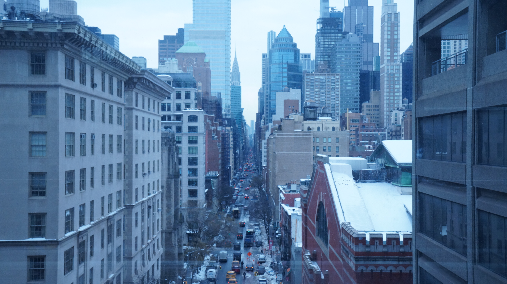

Victoria Town
As an exchange student in New York City, I aim to capture the movement of a city that never pauses. My work explores the intersection of infrastructure and individuality, shaped by the lifestyle of the people who move through them. I am drawn to moments of observation, as a people watcher, from the quiet confidence of a stranger waiting for the train, the busy crowds at rush hour, to the way personal style transforms sidewalks into runways.
Fashion is central to how I see the city. In New York, clothing becomes language, communicating ambition, culture, identity. Through visual storytelling, I aim to capture how style interacts with architecture and pace and how individuality stands out against concrete and glass. My work reflects both my experience as an outsider looking in and my aspiration to contribute to the fashion industry, particularly in marketing, where storytelling shapes perception.
Ultimately, I seek to translate the energy of New York into visual narratives that celebrate movement, individuality, and the power of fashion within the urban landscape.

Depth Of Field Using Blur Filter